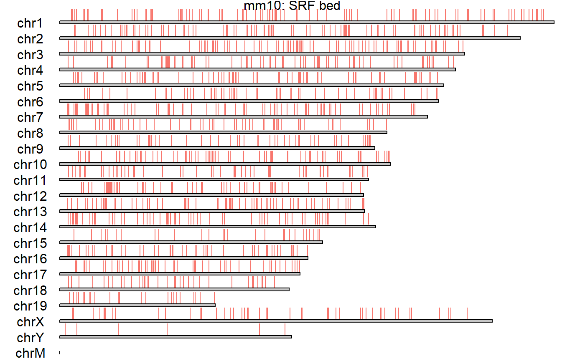
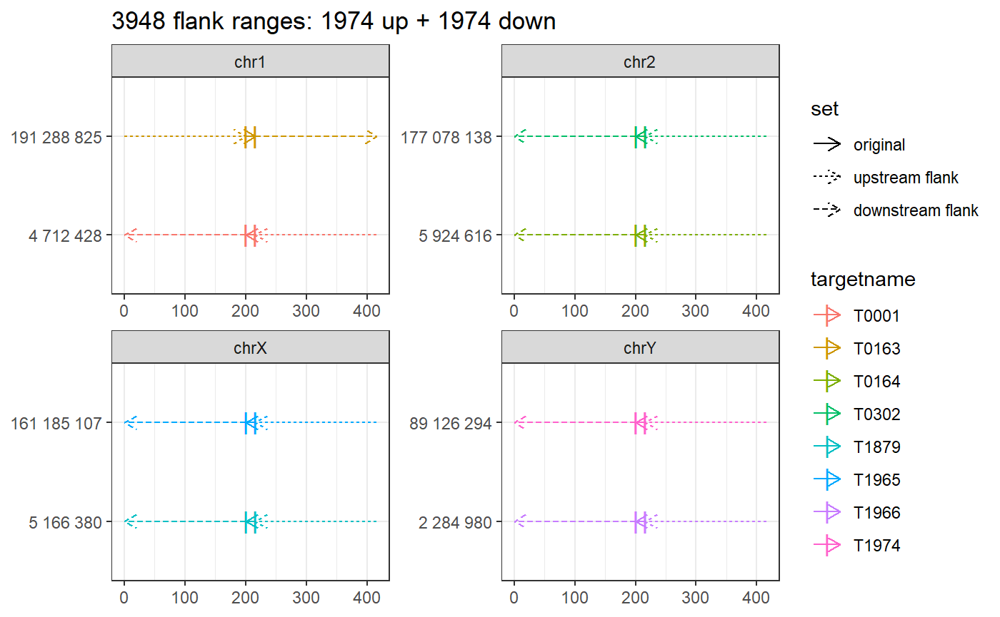
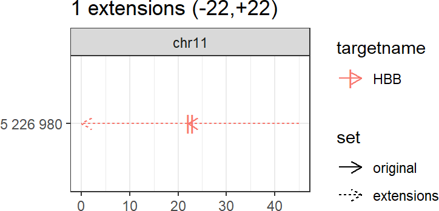

multicrispr: gRNA design for Crispr/Cas9 and Prime Editing
Aditya M Bhagwat
2020-04-20
designing_grna_libraries.RmdBackground
Crispr/Cas9 and Prime Editing
Crispr/Cas9 is a prokaryotic immune system turned into a genome engineering tool, with a Cas9/gRNA complex at the heart of its functioning. The gRNA (guide RNA) contains a 20 nucleotide (proto)spacer which guides the complex to a genomic locus with identical sequence, but only when followed by an NGG PAM (protospacer adjacent motif (see Figure 1A). The Cas9 enzyme performs some effector action at that locus: wildtype Cas9 cuts both strands after spacer nucleotide 17, Cas9Nickase cuts only a single strand (two variants exist, cutting respectively each of the strands), while catalytically dead dCas9, fused to some effector domain (KRAB, VPR, APEX) performs some alternative action (e.g. KRAB represses, VPR activates, APEX biotinylates).
Prime Editing extends this further, by coupling Cas9 to a Reverse Transcriptase (RT). As shown in Figure 1, the guide RNA is extended with a 3’ extension that contains primer binding site (binding a complementary DNA region that acts as a primer for reverse transcription) and reverse transcription template (the template used for reverse transcription). The spacer still acts as targeting agent, guiding the Cas9/RT complex to targeted genomic locus.

gRNAs for Crispr/Cas9 (A) and Prime Editing
Guide RNA design
Guide RNA design involves finding good guide RNAs to hit the targets of interest. Plasmids with guide RNA scaffolds, ready for cloning desired spacers into, can be readily ordered from AddGene. The actual task, therefore, boils down to finding good spacers for the targets of interest. For prime editing, it additionally involves finding appropriate primer binding site and reverse transcription template to edit the target site of interest.
A good spacer needs to fulfill two requirements.
-
Minimal off-target (mis)matches, so that only intended targets are hit.
- Crispr gRNAs can hit exact (with identical and alternate NGG pam), as well as (up-to 2) mismatch offtargets.
- Prime Editing is much more specific, hitting only exact offtargets.
Maximal on-target efficiency. Over the years, several sequence-to-efficiency prediction models have been developed, of which the Doench 2016 score has currently become the community standard. The score is not perfect, and examples can be found where the prediction and the actual outcome differ. Yet, to-date it is the best heuristic to predict on-target efficiency, worth making use of.
Multicrispr
Multicrispr was developed to make guide RNA design easier. As shown below, it contains functions to define and transform targets, find spacers, compute/add specificity (absence of offtargets) and efficiency (Doench 2016), and finally return all of this as a GRanges object.

Install
Installing multicrispr is simple:
url <- 'https://gitlab.gwdg.de/loosolab/software/multicrispr.git'
remotes::install_git(url, repos = BiocManager::repositories())Doench et al. (2016) ’s python package azimuth for on-target efficiency prediction using their method can be easily installed and activated using reticulate:
# Install - run R(Studio) with admin privileges for this to work!
reticulate::conda_create('azienv', 'python=2.7')
reticulate::conda_install('azienv', 'azimuth', pip = TRUE)
reticulate::conda_install('azienv', 'scikit-learn==0.17.1', pip = TRUE)Bowtie-indexed genomes for quick offtarget analysis can be installed using index_genome. For the two genomes used in the examples, mm10 and hg38, the functions downloads pre-build indexes from our data server, allowing a quick exploration (set download=FALSE to build index anew):
Define targets
From a BED coordinate file
bed_to_granges converts a (0-based) BED coordinate file into a (1-based) GRanges.
An example is loading the 1974 binding sites of the transcription factor SRF:
require(magrittr)
require(multicrispr)
bedfile <- system.file('extdata/SRF.bed', package = 'multicrispr')
tfbs0 <- bed_to_granges(bedfile, genome = 'mm10')
## Read SRF.bed into GRanges
## 1974 ranges on 21 chromosomes
From gene identifiers
genes_to_granges and genefile_to_granges convert entrez/ensembl gene identifiers into GRanges using txdb gene models. An example that loads of a small subset of the 1974 SRF binding sites:
require(multicrispr)
entrezfile <- system.file('extdata/SRF.entrez', package = 'multicrispr')
txdb <- TxDb.Mmusculus.UCSC.mm10.knownGene::TxDb.Mmusculus.UCSC.mm10.knownGene
sometfbs0 <- genefile_to_granges(entrezfile, txdb, complement = TRUE)
## Convert 10 genes to 10 GRanges
## 20 ranges after adding inverse strands
From a coordinate vector
char_to_granges uses a 1-based coordinate vector to specify the GRanges.
It can be used to define four prime editing sites mentioned by Anzalone et al. (2019):
# char_to_granges: Anzalone et al. (2019) prime editing targets
bsgenome <- BSgenome.Hsapiens.UCSC.hg38::BSgenome.Hsapiens.UCSC.hg38
x <- c(PRNP = 'chr20:4699600:+', # snp
HBB = 'chr11:5227002:-', # snp
HEXA = 'chr15:72346580-72346583:-', # del
CFTR = 'chr7:117559593-117559595:+') # ins
pe0 <- char_to_granges(x, bsgenome)
plot_intervals(pe0)
Transform targets
As a second step, extension or flanking may be required. The functions left_flank, right_flank, and double_flank flank target ranges, e.g. in order to target promoters or enhancers rather than TSS:


# Double flank
targets <- double_flank(targets0, -200, -1, +1, +200, plot = TRUE)
## 3948 flank ranges: 1974 up + 1974 down
The function extend expands target ranges in either (or both) direction(s), ensuring proper width to contain 23 base Cas9 sites.

Find spacers
The third step consists of finding N20NGG Cas9 sites within the target ranges.
First, we use add_seq to extract the relevant sequences using a BSgenome (R/BioC genome sequence object).
Then we use find_cas9s to find N20NGG Cas9 sequences and ranges within targets. The associated plot shows that (nearly) all targets have Cas9 sites.
bsgenome <- BSgenome.Mmusculus.UCSC.mm10::BSgenome.Mmusculus.UCSC.mm10
spacers <- find_spacers(targets, bsgenome=bsgenome)
## 3948 ranges after adding inverse strands
Predict targeting efficiency
Not all N20NGG gRNA sequences target equally well (even when matching sequence perfectly). For each position in the 23-bp gRNA sequence, the nucleotide present in current, previous and next position has an effect on targeting efficiency. Doench et al. (2014) were the first to systematically investigate the relationship between sequence and targeting efficiency, which they summarized in their 2014 prediction model. The function score_cas9s uses this model to compute the Doench 2014 targeting efficiency predictions:
spacers %<>% add_efficiency(bsgenome, 'Doench2014')
## Score crispr spacers
## Add (4-23-3) contextseqs
## Score contextseqs with Doench2014
The same authors later developed an updated model (Doench et al., 2016), which to-date remains the most comprehensive prediction model developed and the current community standard. The prediction model was implemented as a python module, which the authors freely share on github (github/MicrosoftResearch/azimuth). The installation of this python module is fairly straightforward:
- Install conda for python 2.7
- Create a new conda environment:
conda create --name azimuthenv python=2.7 - Activate conda environment:
conda activate azimuthenv - Install module azimuth:
pip install azimuth - Install scikit-learn:
pip install scikit-learn==0.17.1
Once azimuth is installed, score_cas9s can compute the Doench2016 score as well, under the hood calling the python module azimuth with a little help from the amazing R-to-python reticulate package.
# Install azimuth
# Important: run R(Studio) with admin privileges for this to work
install_azimuth <- FALSE
if (install_azimuth){
reticulate::conda_create('azienv', 'python=2.7') # Create condaenv 'azimuth'
reticulate::conda_install('azienv', 'azimuth', pip = TRUE) # Install azimuth
reticulate::conda_install('azienv', 'scikit-learn==0.17.1', pip = TRUE) # Install scikit-learn
}
# Score Doench2016
if (reticulate::py_module_available('azimuth')){
spacers %<>% add_efficiency(bsgenome, 'Doench2016')
}
## Score crispr spacers
## Add (4-23-3) contextseqs
## Score contextseqs with Doench2016 (azimuth)
## Run Doench2016 1 times on 10000-seq chunks and concatenate (to preserve memory)
## No model file specified, using V3_model_nopos
## Completed in 13 secs